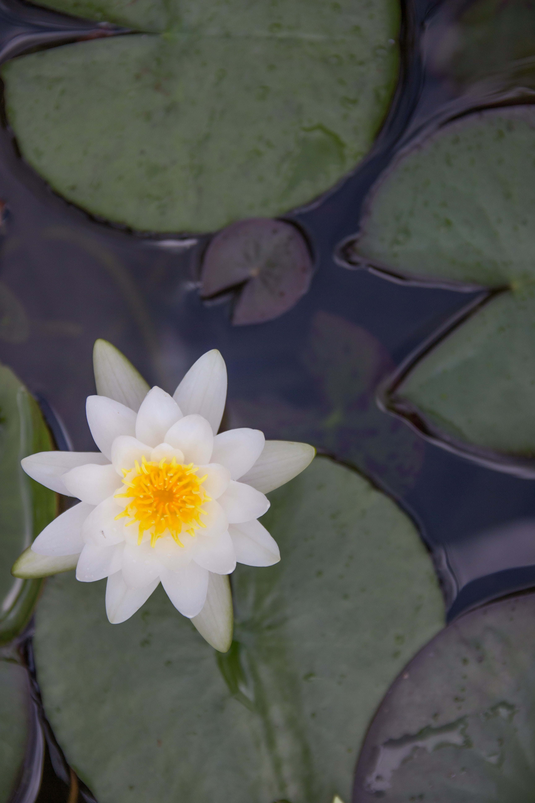
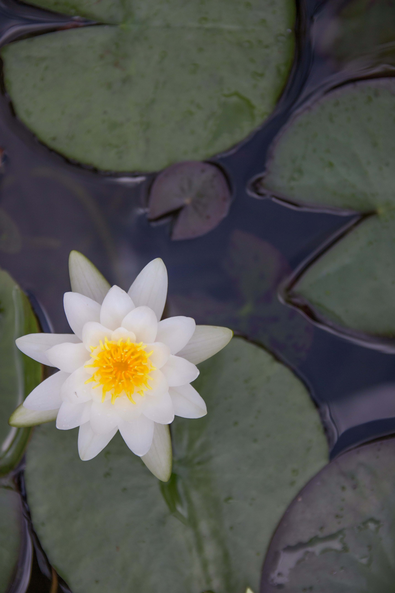

Photography
I may not be a professional photographer but I would like to capture the moments as they come. It might look like I just take pictures of flowers, but I do enjoy many aspects of nature has to offer. Here are some of my favorite photos that I have taken with my Canon T3i DSLR.


 


And here are a few pictures that I have taken of friends.